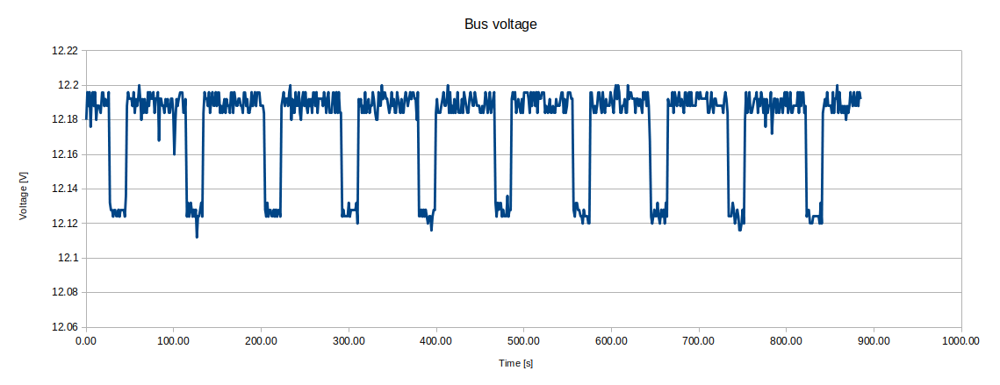
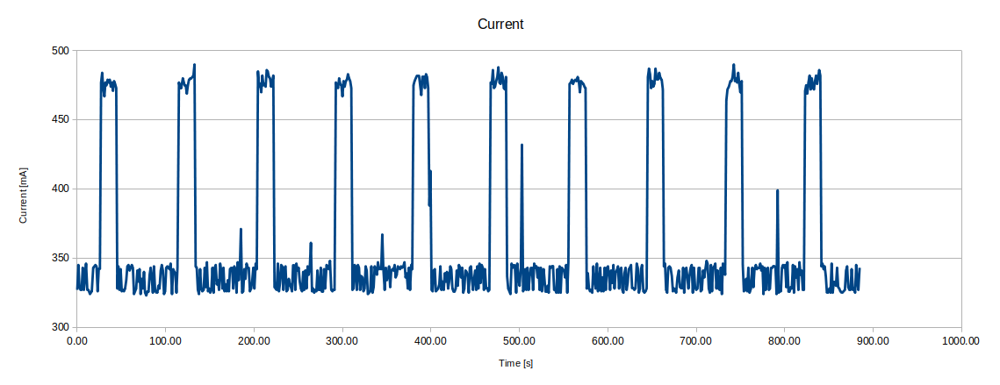
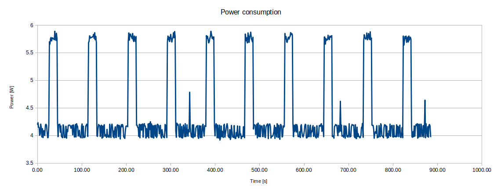
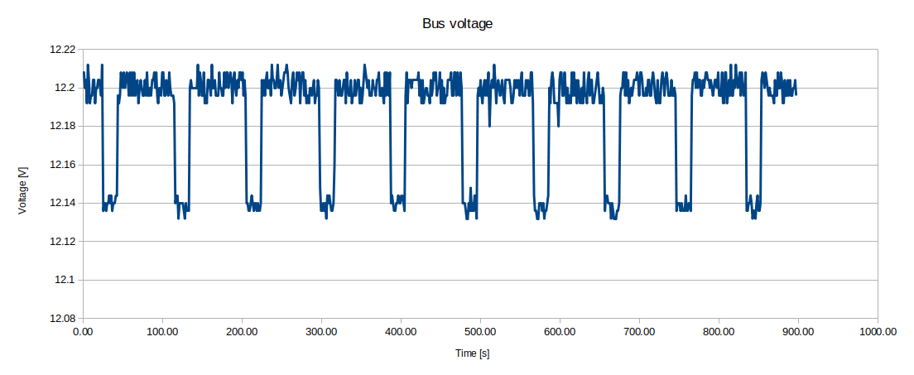
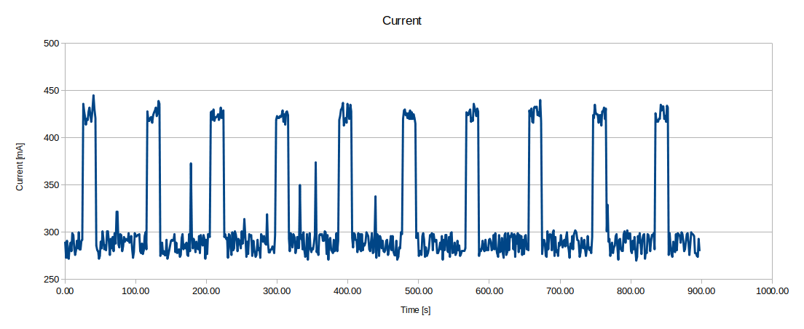
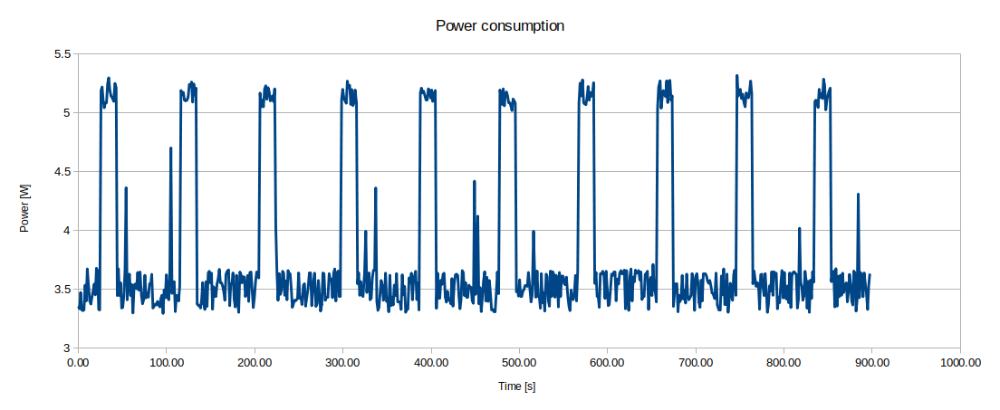

PC Engines apu3 power consumption tests
We have started research and measurements of power consumption on apu platforms. Our goal is to optimize (if possible) power management on coreboot level. First stage of work is to collect data from various tests and create reports. For that purpose we have used RTE with power monitor sensor. RTE stands for Remote Testing Environment and it is a tool which helps debugging and testing devices. RTE gathers all necessary interfaces and ports in one device. Therefore, it is very versatile and convenient to use. More information can be found on 3mdeb official website. It is also place where you can buy it.
This document gathers all already carried out tests, their results and our conclusions. Over time, we will conduct next tests and hence extend this document with further reports.
Tests
apu3 stress-test cpu
Test case is following:
- Power on RTE and power on apu3.
- Boot to Debian 10 (buster) with kernel 4.19 on apu3.
- Start measurements on RTE: constantly measure bus voltage, current and input power in 0.5 seconds time intervals and save them to text file.
- After 10 seconds from starting measurements, invoke
sysbenchcommand on apu3. - When
sysbenchfinished, wait ~25 seconds and invoke command again. - When
sysbenchcommand was invoked 10 times, finish entire test.
Results with coreboot v4.11.0.4
Above test was performed with coreboot v4.11.0.4 which doesn't have ASPM
(Active State Power Management) enabled. This feature was introduced in
v4.11.0.5 release.
$ sysbench cpu run --threads=4 --events=10000 --cpu-max-prime=20000 --time=0 --validate
sysbench 1.0.19 (using bundled LuaJIT 2.1.0-beta2)
Running the test with following options:
Number of threads: 4
Validation checks: on.
Initializing random number generator from current time
Prime numbers limit: 20000
Initializing worker threads...
Threads started!
CPU speed:
events per second: 539.76
General statistics:
total time: 18.5220s
total number of events: 10000
Latency (ms):
min: 6.40
avg: 7.41
max: 8.13
95th percentile: 7.70
sum: 74064.78
Threads fairness:
events (avg/stddev): 2500.0000/18.61
execution time (avg/stddev): 18.5162/0.00



Conclusions
In idle state, when only Debian is running without any commands and
applications, power consumption oscillates around 4W. It increases to almost 6W
(~5.8W) when sysbench is running. That change is mainly caused by current
rise. However, simultaneously there is a little voltage drop on the bus. As you
can see it drops from about 12.18 V to 12.12 V. That behavior is normal - the
greater the load, the greater voltage decrease can be observed. It is rather
related to quality of power supply and wires than to end device. Moreover, as
this voltage drop is slight, it can be omitted in analysis.
Results with coreboot v4.11.0.5
Above test was repeated with coreboot v4.11.0.5 which has ASPM (Active
State Power Management) enabled. Exactly same test case was carried out and same
measurements were taken.
$ sysbench cpu run --threads=4 --events=10000 --cpu-max-prime=20000 --time=0 --validate
sysbench 1.0.19 (using bundled LuaJIT 2.1.0-beta2)
Running the test with following options:
Number of threads: 4
Validation checks: on.
Initializing random number generator from current time
Prime numbers limit: 20000
Initializing worker threads...
Threads started!
CPU speed:
events per second: 539.80
General statistics:
total time: 18.5200s
total number of events: 10000
Latency (ms):
min: 6.36
avg: 7.41
max: 8.17
95th percentile: 7.70
sum: 74053.97
Threads fairness:
events (avg/stddev): 2500.0000/18.79
execution time (avg/stddev): 18.5135/0.00



coreboot v4.11.0.4 vs v4.11.0.5
Comparing those results to previous one (with coreboot v4.11.0.4), following
differences can be noticed:
- average bus voltage level in idle state and during stress-test is slightly
larger with
coreboot v4.11.0.5thancoreboot v4.11.0.4; however, those differences are only about 0,01/0,02 V, which makes 0,17% measurement error. As power monitor sensor accuracy is up to 1%, obtained error is within the norm; - in idle state, power consumption oscillates around 3.5W and when
sysbenchis running it increases to 5.3W top; it is improvement by approximately 0.5W in each state againstcoreboot v4.11.0.4;
Remarks
Carried out tests are definitely insufficient to draw far-reaching conclusions. There must be done more tests which involve another hardware components and operations. It is already on our roadmap and we should successively introduce more. Although it is beginning of research, we already have some remarks and leads:
- power monitor sensor seems to work fine, the more there are estimated differences in power consumption with different coreboot versions;
- before moving to optimization stage, we need to collect large enough and diverse database - so far we have carried out only one test;
- we should setup exact same test suite (with the same apu platform, firmware, operating system and power monitor sensor) to confirm that results are repeatable;